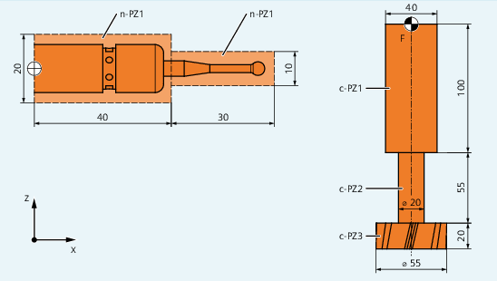

Vorher im Teileprogramm definierte Schutzbereiche können jederzeit aktiviert bzw. für eine spätere Aktivierung durch das PLC-Anwenderprogramm voraktiviert werden. Aktive Schutzbereiche können jederzeit wieder deaktiviert werden.
Bei der Aktivierung bzw. Voraktivierung besteht zudem die Möglichkeit, den Bezugspunkt des Schutzbereichs relativ zu verschieben.
| Hinweis |
|
Ein Schutzbereich wird erst nach dem Referenzieren aller Geometrieachsen des Kanals, in dem er aktiviert wurde, berücksichtigt. |
| Hinweis |
Überwachung der SchutzbereicheIst kein werkzeugbezogener Schutzbereich aktiv, wird die Werkzeugbahn gegen die werkstückbezogenen Schutzbereiche geprüft. Ist kein werkstückbezogener Schutzbereich aktiv, findet keine Schutzbereichsüberwachung statt. |
| Vordefinierte Prozedur zum Aktivieren eines kanalspezifischen Schutzbereichs | ||
| Vordefinierte Prozedur zum Aktivieren eines maschinenspezifischen Schutzbereichs | ||
| Nummer des Schutzbereichs | ||
Datentyp: | INT | ||
| Mit diesem Parameter wird der kanalspezifische Aktivierungsstatus gesetzt | ||
Datentyp: | INT | ||
Wert: |
| Schutzbereich deaktivieren | |
| Schutzbereich voraktivieren | ||
| Schutzbereich aktivieren | ||
| Schutzbereich voraktivieren mit bedingtem Stopp | ||
| Additive Verschiebungswerte in X/Y/Z-Richtung Die Verschiebung kann in 1, 2 oder 3 Dimensionen erfolgen. Die Verschiebungswerte beziehen sich auf:
| ||
Datentyp: | REAL | ||
Für eine Fräsmaschine soll eine mögliche Kollision des Fräsers mit dem Messtaster überwacht werden. Die Lage des Messtasters soll bei der Aktivierung durch eine Verschiebung angegeben werden.
Es werden dafür folgende Schutzbereiche definiert:
Jeweils ein maschinenspezifischer und werkstückbezogener Schutzbereich für den Messtasterhalter (n-PZ1) und für den Messtaster selbst (n-PZ2).
Jeweils ein kanalspezifischer und werkzeugbezogener Schutzbereich für den Fräserhalter (c-PZ1), den Fräserschaft (c-PZ2) und für den Fräser selbst (c-PZ3).
Die Orientierung aller Schutzbereiche liegt in Z-Richtung.
Die Lage des Bezugspunkts des Messtasters bei der Aktivierung soll bei X = -120, Y = 60 und Z = 80 liegen.
① | Bezugspunkt für den Schutzbereich des Messtasters |
F | Werkzeugträgerbezugspunkt |
| Programmcode | Kommentar |
|---|---|
| DEF INT PROTZONE | ; Definition einer Hilfsvariablen |
| G17 | ; Arbeitsebene XY |
| ; Definition der Schutzbereiche: | |
| NPROTDEF(1,FALSE,3,10,–10) | ; Schutzbereich n–PZ1 |
| G01 X0 Y–10 | |
| X40 | |
| Y10 | |
| X0 | |
| Y-10 | |
| EXECUTE(PROTZONE) | |
| NPROTDEF(2,FALSE,3,5,–5) | ; Schutzbereich n–PZ2 |
| G01 X40 Y–5 | |
| X70 | |
| Y5 | |
| X40 | |
| Y-5 | |
| EXECUTE(PROTZONE) | |
| CPROTDEF(1,TRUE,3,0,–100) | ; Schutzbereich c–PZ1 |
| G01 X–20 Y–20 | |
| X20 | |
| Y20 | |
| X-20 | |
| Y-20 | |
| EXECUTE(PROTZONE) | |
| CPROTDEF(2,TRUE,3,–100,–150) | ; Schutzbereich c–PZ2 |
| G01 X0 Y–10 | |
| G03 X0 Y10 J10 | |
| X0 Y–10 J–10 | |
| EXECUTE(PROTZONE) | |
| CPROTDEF(3,TRUE,3,–150,–170) | ; Schutzbereich c–PZ3 |
| G01 X0 Y–27.5 | |
| G03 X0 Y27.5 J27.5 | |
| X0 Y27.5 J–27.5 | |
| EXECUTE(PROTZONE) | |
| ; Aktivierung der Schutzbereiche: | |
| NPROT(1,2,–120,60,80) | ; Schutzbereich n–PZ1 mit Verschiebung aktivieren |
| NPROT(2,2,–120,60,80) | ; Schutzbereich n–PZ2 mit Verschiebung aktivieren |
| CPROT(1,2,0,0,0) | ; Schutzbereich c–PZ1 aktivieren |
| CPROT(2,2,0,0,0) | ; Schutzbereich c–PZ2 aktivieren |
| CPROT(3,2,0,0,0) | ; Schutzbereich c–PZ3 aktivieren |
Siehe auch:
Schutzbereiche aktivieren/deaktivieren (CPROT, NPROT): Weitere Informationen
Schutzbereiche definieren (CPROTDEF, NPROTDEF)
Überprüfung auf Schutzbereichsverletzung, Arbeitsfeldbegrenzung und Software-Endschalter (CALCPOSI)